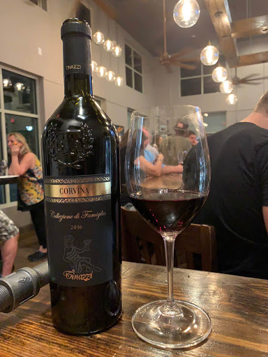
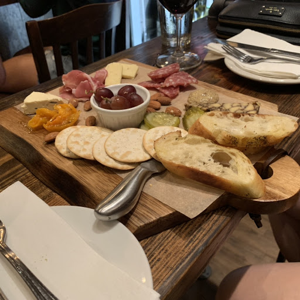

Vintner's Hill
Your Neighborhood Wine Bar

Note: This article was first posted on October 10, 2018 here
Walking into Vintner’s Hill on a Friday night means live music and people from all ages enjoying winding down after a long week. We have been going to Vintner’s for the last 2 years and it has been a part of the Mint Hill community since 2015. We’ve always enjoyed their nice bottle selection, but since the new ownership last fall, a significant change in the food, prices, and atmosphere are driving the crowds to this neighborhood bar.
We also had the opportunity to chat with Chris, one of Vintner’s owners for a bit. Vintner’s stands out among other wine bars. First, they are not just a wine bar, but also a coffee shop. People can come in and have some coffee and do some work in the morning or stop by for a lunch special. Second, they have a great neighborhood feel. In addition, the wine selection is aimed to range in price while ensuring each bottle is high quality. Vintner’s is a place for everyone, for dates, for friends, for family, for doing work, and for having a relaxing Friday night.
Wine purchases at Vintner’s can be enjoyed at the bar without a corkage fee or taken home. During this visit, we opted for a bottle of Corvina ($25) upon the recommendation of one of the owners, Chris. Corvina is one of our favorite grapes from the Verona area of Italy. Next we looked at the menu, which has been revamped in the last year and now includes soft pretzels, avocado toast, and cauliflower crust pizza. We ordered the small charcuterie and a very tasty Bruschetta chicken flatbread. The charcuterie was an amazing value at only $12 and included a beautiful soft blue cheese, Havarti, and a stout cheese as well as pickles, salami, prosciutto, almonds, apricots, and grapes. We did not taste the cauliflower crust pizza, but it looked amazing as well. In addition to the wine, Vintner’s also offers local craft drafts and has an interesting beer bottle selection.
 Location and hours:7427 Matthews-Mint hill Rd, Suite #108
Mint Hill, NC 28227
Mon-Thurs: 8AM-10PM | Fri-Sat: 8AM-11PM
Weekly Tasting Time: There is no set weekly tasting at Vintner’s, however they do have a $5 first Monday of the month tasting as well as flights available daily.
Pro Tip: Go for one of the $5 features wine glasses of the month to try something new or hit the bottle selection to share with friends or your significant other.
Need to Know: There will be a customer appreciation event Saturday October 13 with multiple vendors in the shop.
My Wine Selections: Tinazzi Corvina di Verona Selezione di Famiglia